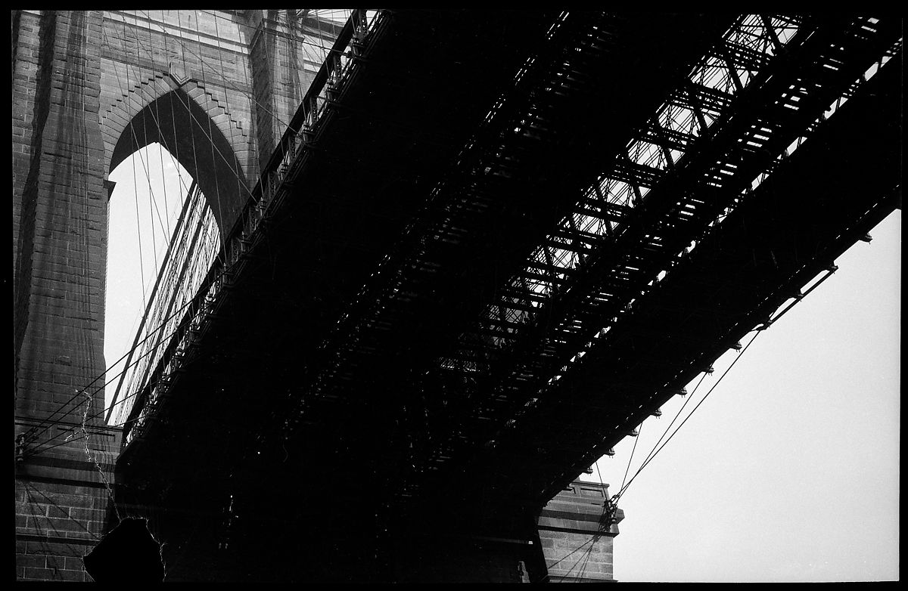
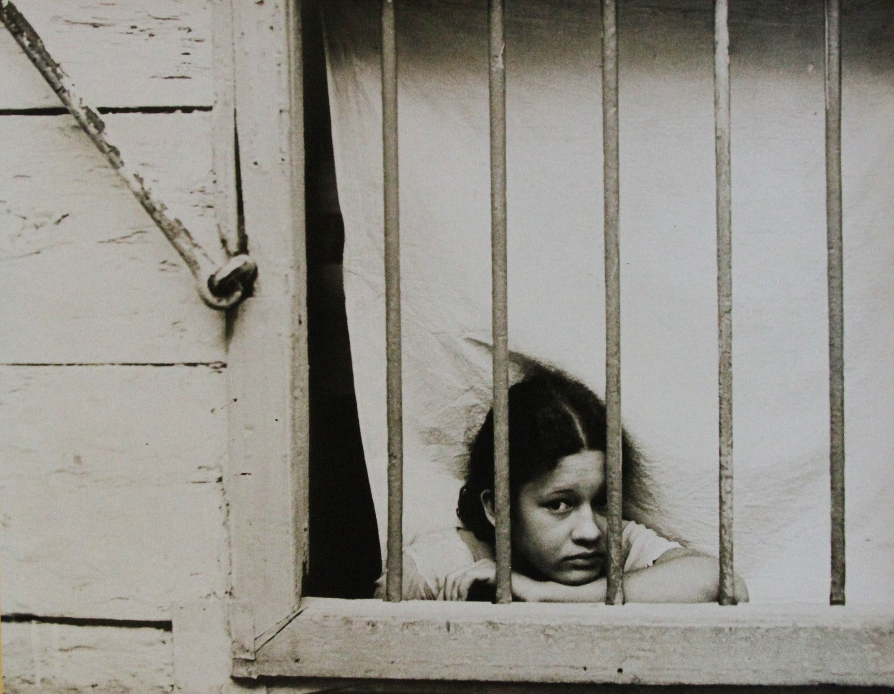

He was born in St. Louis, Missouri, to Jessie (née Crane) and Walker Evans. His father was an advertising director. Walker was raised in an affluent environment; he spent his youth in Toledo, Chicago, and New York City. He attended The Loomis Institute and Mercersburg Academy before graduating from Phillips Academy in Andover, Massachusetts, in 1922. He studied French literature for a year at Williams College, spending much of his time in the school's library, before dropping out. He returned to New York and worked as a night attendant in the map room of the Public Library. After spending a year in Paris in 1926, he returned to the United States to join a literary and art crowd in New York City. John Cheever, Hart Crane, and Lincoln Kirstein were among his friends. He was a clerk for a stockbroker firm in Wall street from 1927 to 1929.
Evans took up photography in 1928 around the time he was living in Ossining, New York. His influences included Eugène Atget and August Sander. In 1930, he published three photographs (Brooklyn Bridge) in the poetry book The Bridge by Hart Crane. In 1931, he made a photo series of Victorian houses in the Boston vicinity sponsored by Lincoln Kirstein.
In May and June 1933, Evans took photographs in Cuba on assignment for Lippincott, the publisher of Carleton Beals' The Crime of Cuba (1933), a "strident account" of the dictatorship of Gerardo Machado. There Evans drank nightly with Ernest Hemingway, who loaned him money to extend his two-week stay an additional week. His photographs documented street life, the presence of police, beggars and dockworkers in rags, and other waterfront scenes. He also helped Hemingway acquire photos from newspaper archives that documented some of the political violence Hemingway described in To Have and Have Not (1937). Fearing that his photographs might be deemed critical of the government and confiscated by Cuban authorities, he left 46 prints with Hemingway. He had no difficulties when returning to the United States, and 31 of his photos appeared in Beals' book. The cache of prints left with Hemingway was discovered in Havana in 2002 and exhibited at an exhibition in Key West.